China keeps four wooden buildings from the Tang, and fewer than thirty from the Song. The surviving relics cluster along three routes: Shanxi’s mountain temples, Xi’an’s imperial core, and Dunhuang’s cave art.
Every site carries an honesty label — gold, original; cinnabar, rebuilt. Built for travelers who want the real thing, not a theme park.
Tang (618-907) ruled from Chang'an (Xi'an), controlled the Silk Road, and had China's only female emperor, Wu Zetian. It was a cosmopolitan military empire — the largest, richest state on earth at its peak.
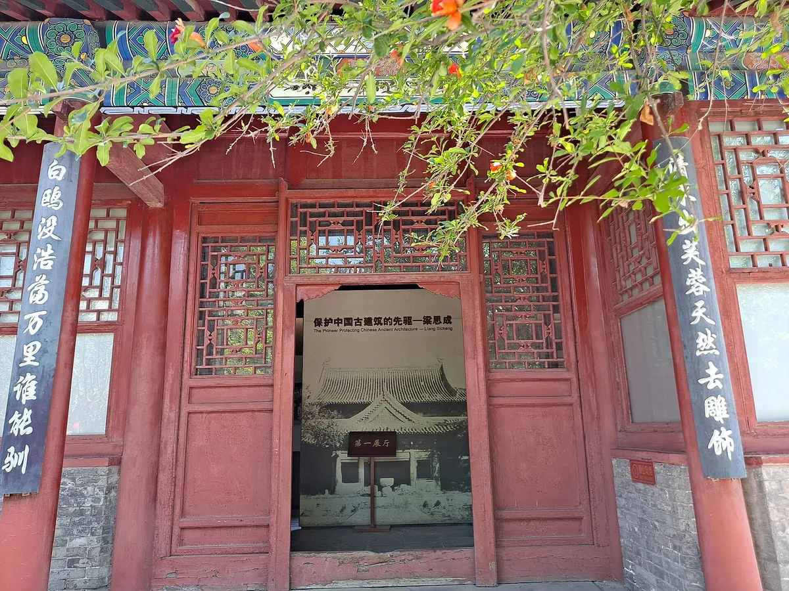
Song (960-1279) ruled from Kaifeng then Hangzhou, invented paper money and gunpowder weapons, and launched the world's first industrial revolution. Smaller territory, more technological innovation.
What survives? 4 Tang wooden buildings in China (all in remote Shanxi). Under 30 Song buildings. See where to find them.
Side by Side · 两朝对照
Tang vs Song: Full Comparison
For anyone who wants the full breakdown: 10 dimensions, side by side.
907: Zhu Wen deposed last Tang emperor; empire fractured into Five Dynasties and Ten Kingdoms
1279: Kublai Khan's Mongols conquered the Southern Song; last emperor drowned at Yamen
Traveler's Guide · 旅行指南
What Survives and Where to Find It
The comparison above covers the history. But if you want to see these places — here is everything we know about what still exists, how real it is, and how to get there.
A warning: most "ancient" attractions in China were built in the last 30 years. Theme parks dressed as dynasties.
Every location below carries an honesty label — green for original structures, red for modern recreations. You will know exactly what you are paying for — before you spend 4 hours on a mountain road to reach a temple built in 782, or 120 CNY to enter a theme park built in 1998.
Every location on this site carries one of four labels. This is our core promise: we tell you what is real, what is rebuilt, and what is a theme park.
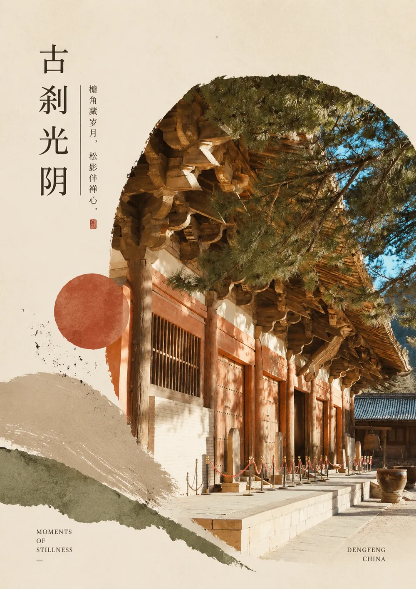
Original Structure
Original construction from the dynasty period, still standing.
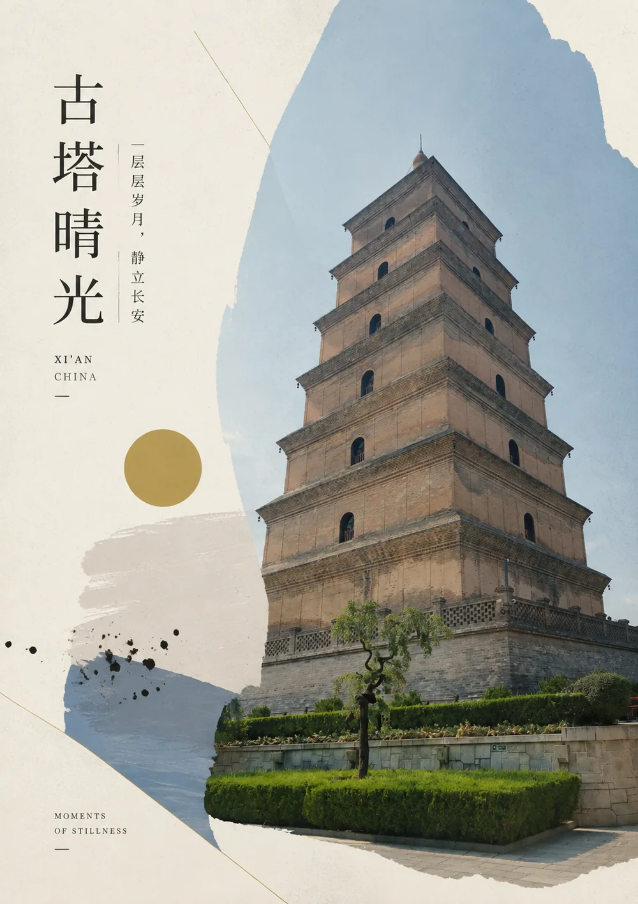
Original Site, Later Building
Original location, but the current structure was rebuilt in a later period.
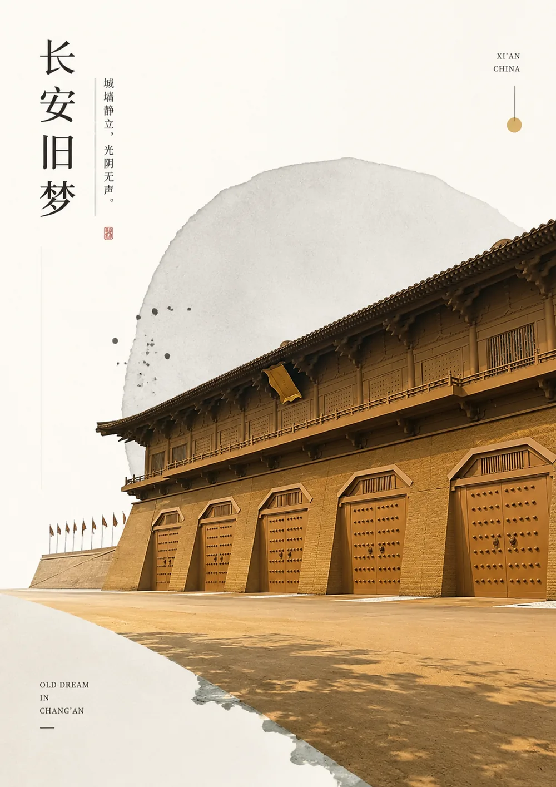
Archaeological Site
Excavated ruins only. No standing original structure. Artifacts are in museums.
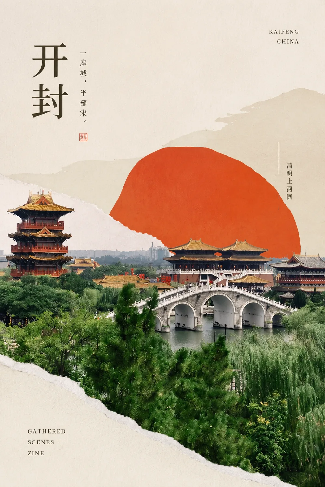
Modern Reconstruction
Built in recent decades. A theme park or tourist reconstruction, not a historical structure.
Era I — The Tang · 唐 遗存
Tang Dynasty: Where to See What Survives
Original Structure
cn
Foguang Temple East Hall
Foguang Si Dong Dadian · Foguang Si Dong Dadian
Built: 857Location: Xinzhou, Shanxi
Why go: Largest Tang wooden structure still standing. Liang Sicheng found it in 1937 while searching for surviving Tang buildings. Japanese scholars had claimed none existed in China. It proved Tang timber-frame architecture was real.
Admission: 40 CNYTime: 2 hrs min
Honest note: 4 hr drive from Taiyuan on mountain road. No public transit. Nearest town Doucun has basic guesthouses.
Why go: Oldest surviving wooden building in China, dated 782. A modest three-bay hall that escaped the 845 Buddhist persecution by being too small and remote to matter.
Admission: 20 CNYTime: 1.5 hrs
Honest note: Even more remote than Foguang. Combine both in one trip. No public transit.
Why go: Built 652 under Xuanzang to house sutras from India. Current structure is Ming dynasty but follows Tang form on original Tang foundation. One of few tangible Tang landmarks in Xi an.
Admission: 50 CNYTime: 1-2 hrs
Honest note: This is a Ming dynasty rebuild on a Tang foundation. It is NOT a Tang structure. Interior is modern.
Why go: 200+ Tang-period caves with original wall paintings and sculptures. Largest surviving body of Tang pictorial art. Cave 45 has the best-preserved Tang sculpture grouping.
Admission: 238 CNYTime: 3-4 hrs
Honest note: Guided tours only, strictly timed. No photos inside. Book weeks ahead.
Why go: 1987 discovery of an intact Tang underground palace sealed in 874. Contained Buddha finger-bone relic plus 2,499 items of Tang gold, silver, glass, and textiles. Greatest Tang archaeological find.
Admission: 120 CNYTime: 2-3 hrs
Honest note: The above-ground temple is modern. Only the underground crypt and museum collection are Tang.
Why go: Main Tang imperial palace, larger than the Forbidden City. Today: foundations exposed, museum on site. Understanding Tang scale requires seeing this.
Admission: 60 CNYTime: 2-3 hrs
Honest note: Almost nothing above ground. You walk across buried foundations in a large park. The reconstructed gate is modern.
Why go: Oldest wooden structure in southern China, built 1013. Masterpiece of Song timber framing that predates the official Song building manual (Yingzao Fashi, 1103).
Admission: 20 CNYTime: 1-2 hrs
Honest note: Only the Main Hall is Song. Other temple halls are later additions.
Why go: Famous 3-degree lean predates Pisa by 200 years. Original brick pagoda with visible traces of original color. One of the most atmospheric Song sites.
Admission: 60 CNYTime: 2-3 hrs
Honest note: Cannot enter the pagoda. The lean is charming but a structural issue.
Why go: 1998 theme park recreating scenes from the famous Song painting Along the River During the Qingming Festival. Performances and reconstructed Song streets.
Admission: 120 CNYTime: 3-4 hrs
Honest note: Zero historical fabric. A theme park. Useful for families and understanding Song street life at human scale.
Where to go, how to get there, and how to string the sites together. Both routes assume you can take high-speed trains and are comfortable with some long drives.
Tang Heritage Trail
Xi'an → Taiyuan → Xinzhou → Dunhuang
8-10 days
Days 1-3
Xi'an
Big Wild Goose Pagoda, Daming Palace, Shaanxi History Museum. Stay near Bell Tower. Book Shaanxi Museum 3+ days ahead on WeChat.
Day 3
Baoji day trip (from Xi'an)
Famen Temple Museum. 2 hrs by car or 1.5 hrs HSR + taxi. Return to Xi'an.
Day 4
Taiyuan
HSR Xi'an-Taiyuan (3.5 hrs). Afternoon: Jinci Temple. Stay in Taiyuan.
Days 5-6
Xinzhou mountain temples
Hire car+driver from Taiyuan (~600-800 CNY/day). 4 hr mountain road. Visit Foguang East Hall + Nanchan Temple in one day. Overnight in Doucun (basic guesthouse) or return to Taiyuan. No public transit.
Days 7-9
Dunhuang
Fly Taiyuan-Dunhuang or train via Lanzhou. Mogao Caves: book Standard Visit (8 caves, 238 CNY) 2+ weeks ahead on WeChat mini-program. Stay in Dunhuang city.
Day 10
Depart
Fly out from Dunhuang (DNH) or return to Xi'an.
Best season
April-May, September-October. Avoid July-August and Chinese New Year.
Fly into Zhengzhou (CGO). 40 min HSR to Kaifeng. Afternoon: Iron Pagoda. Stay in Kaifeng.
Day 2
Kaifeng
Qingming Riverside Garden (theme park, family-friendly). Note: Song Kaifeng is buried 8m under silt. Only the Iron Pagoda (1049) is original.
Days 3-4
Zhengding & Taiyuan
HSR to Shijiazhuang (2 hrs), taxi to Zhengding (30 min). Longxing Temple. Next day: HSR to Taiyuan (1.5 hrs). Jinci Temple. Stay in Taiyuan.
Days 5-6
Suzhou
Fly or HSR Taiyuan-Shanghai, train to Suzhou (30 min). Tiger Hill Pagoda, Suzhou Museum. Stay in Suzhou old town.
Days 7-9
Hangzhou
HSR Suzhou-Hangzhou (1 hr). Liuhe Pagoda, Southern Song Official Kiln Museum, West Lake. Stay near West Lake.
Days 10-11
Ningbo
HSR Hangzhou-Ningbo (1 hr). Baoguo Temple Main Hall (1013). Fly out from Ningbo (NGB) or Shanghai (PVG).
Best season
March-May, October-November. Jiangnan is beautiful in spring. Avoid summer humidity.
Difficulty
Easy-moderate. All Jiangnan sites accessible by public transit.
Budget
~10,000-15,000 CNY/person (excluding international flights).
Museums · 博物馆
Museums with Tang and Song Collections
Not everything is at the ruin sites. The best Tang and Song artifacts live in museums around the world. Here is where to find them — and the one piece that makes each museum worth the visit.
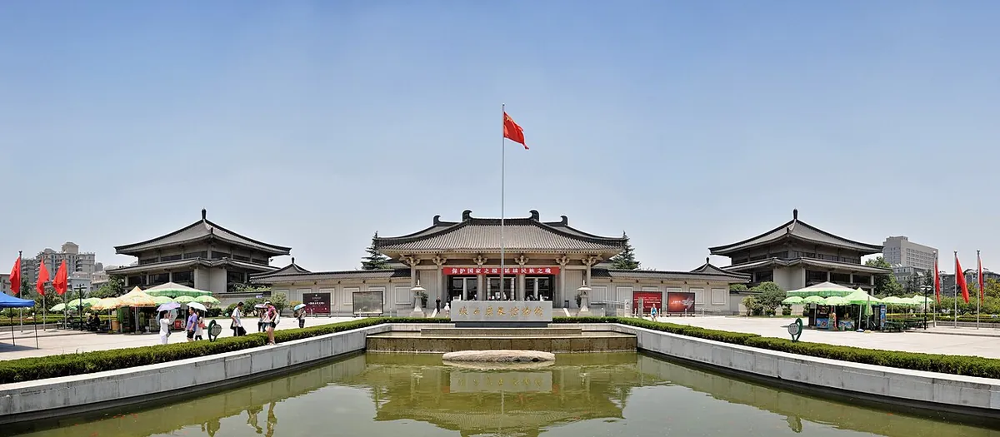
MUSEUM
Xi'an, China
Shaanxi History Museum
The finest public collection of Tang gold, silver, and tomb murals. The Tang dynasty gallery alone is worth a half-day.
Signature piece: the Tang dynasty gallery.
AdmissionFree (book 3+ days ahead on WeChat mini-program)
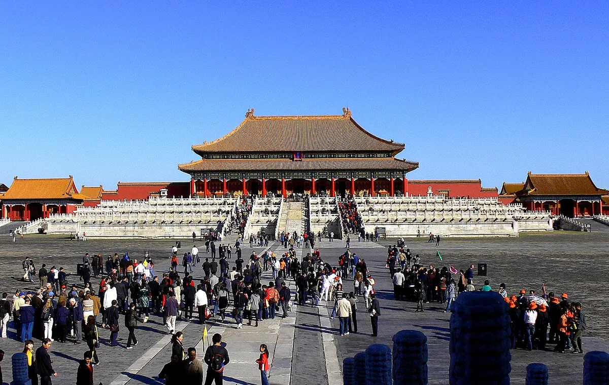
MUSEUM
Beijing, China
Palace Museum
Holds the original Song painting Qingming Shanghe Tu and one of the world's finest imperial ceramics collections. The painting is rarely displayed.
Signature piece: Qingming Shanghe Tu (rarely shown).
Admission60 CNY (book 7 days ahead)
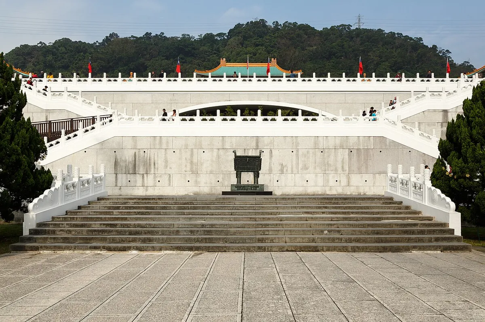
MUSEUM
Taipei, Taiwan
National Palace Museum
Largest Song ceramics collection outside mainland China. 21 Ru ware pieces — the largest surviving collection of the rarest Song ceramics.
Signature piece: the Ru ware collection.
Admission350 TWD
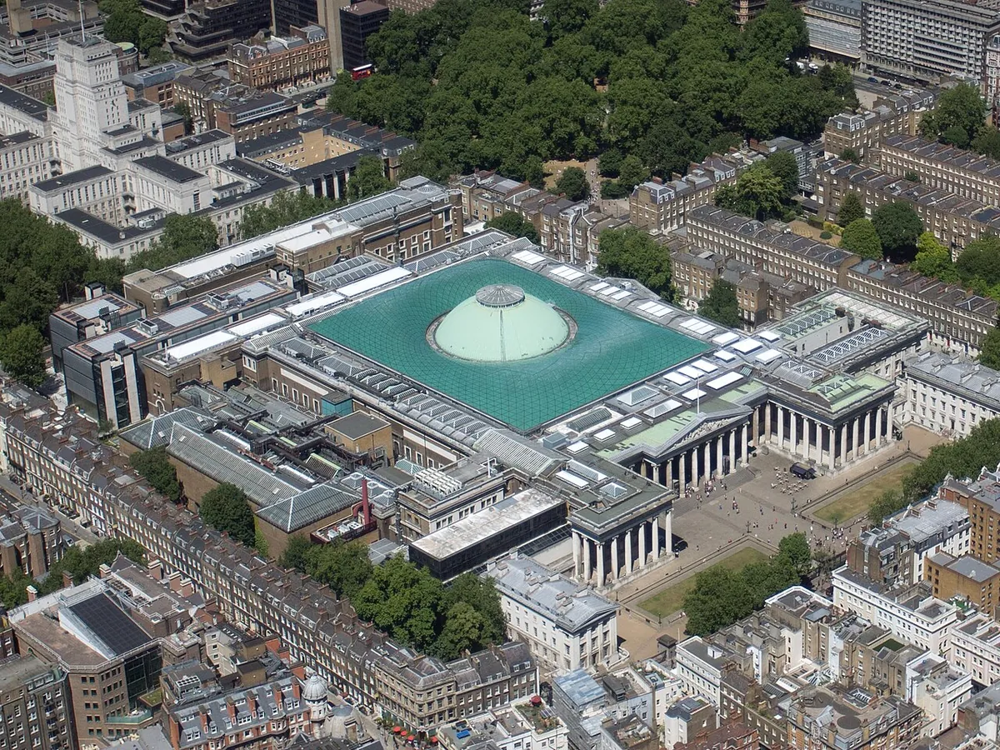
MUSEUM
London, UK
British Museum (Room 33)
Admonitions Scroll (Tang copy) and Tang-Song ceramics. The scroll is displayed for only ~6 weeks per year due to conservation.
Signature piece: the Admonitions Scroll (~6 weeks a year).
AdmissionFree
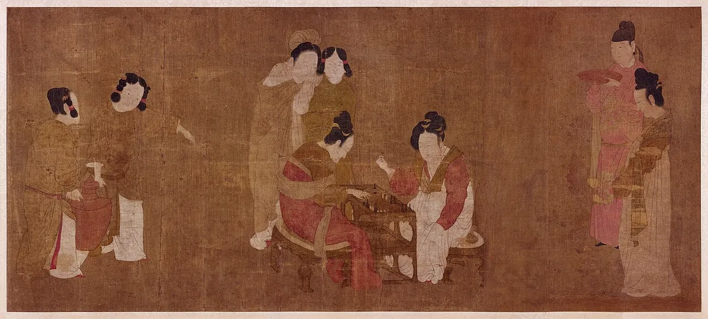
MUSEUM
Washington DC, USA
Freer Gallery of Art
The Peacock Room installation includes Song ceramics. Strong Tang Buddhist sculpture and painting collection.
Signature piece: Peacock Room with Song ceramics.
AdmissionFree
Chronology · 历代年表
Chinese Dynasties Timeline
Tang and Song are only two of many. Here is the full picture — and what remains of each dynasty you can actually see today.
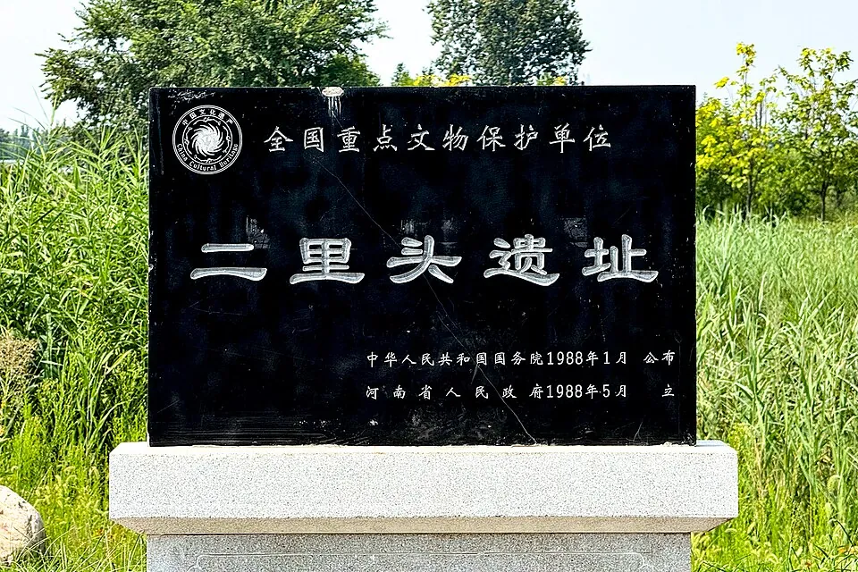
2070-1600 BC
Xia Dynasty
Legendary first dynasty. No contemporary written records. Existence debated — the Erlitou site is the leading candidate.
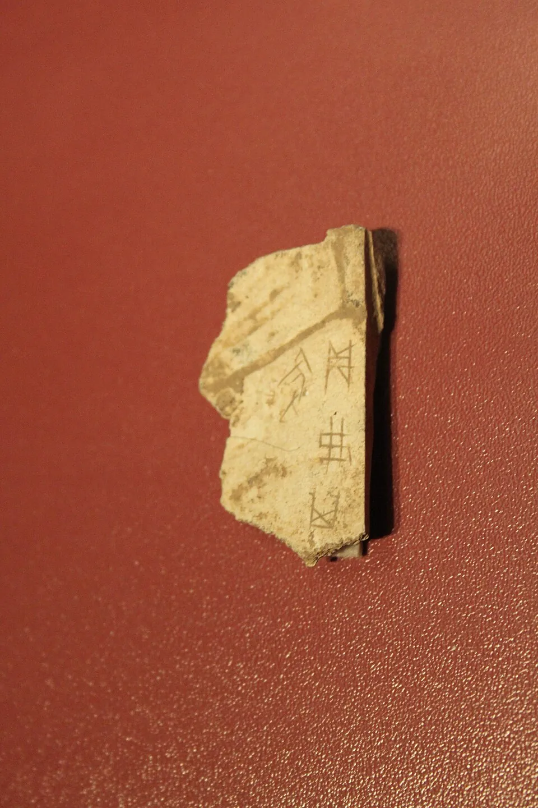
1600-1046 BC
Shang Dynasty
Earliest confirmed Chinese writing (oracle bones). Bronze ritual vessels.
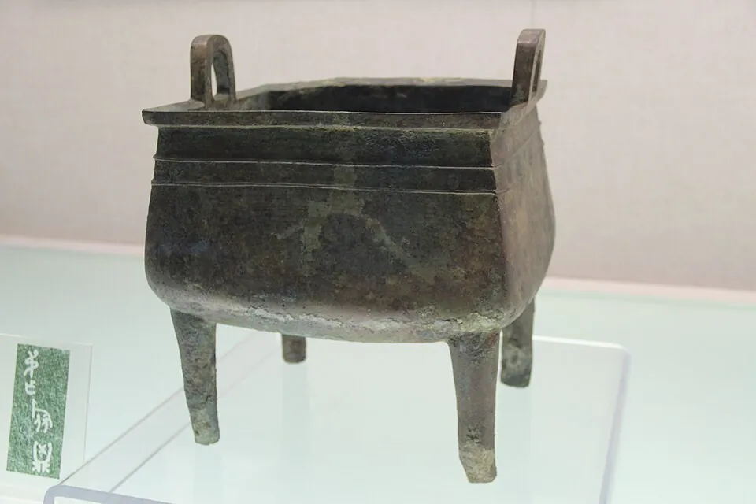
1046-256 BC
Zhou Dynasty
Longest dynasty. Confucius and Laozi lived here. Mandate of Heaven emerges.
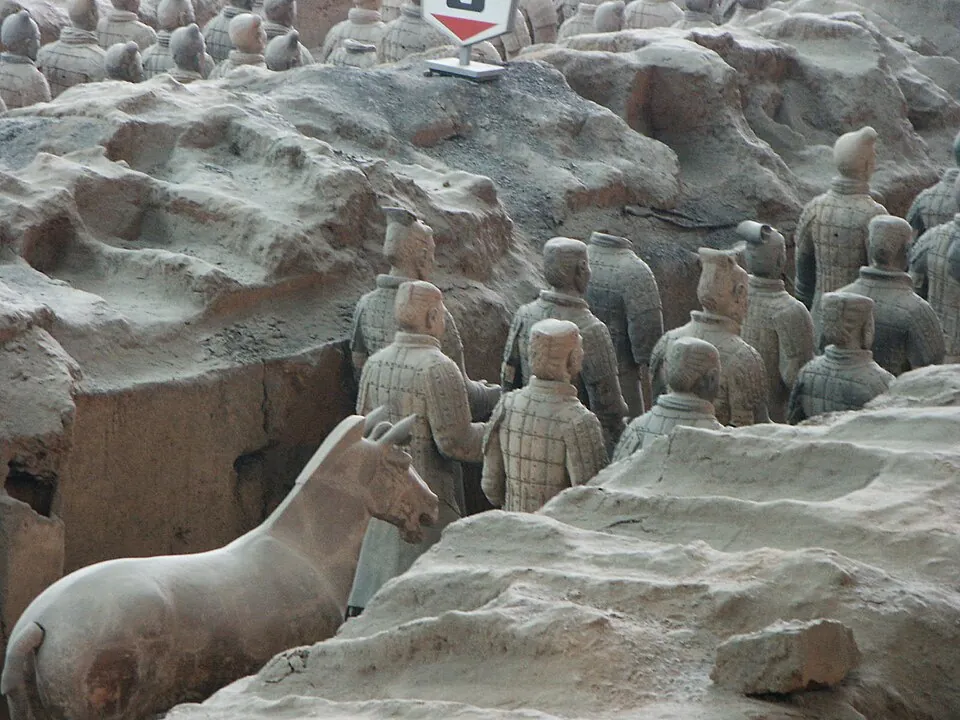
221-206 BC
Qin Dynasty
First unified China. Terracotta Army. Lasted only 15 years.
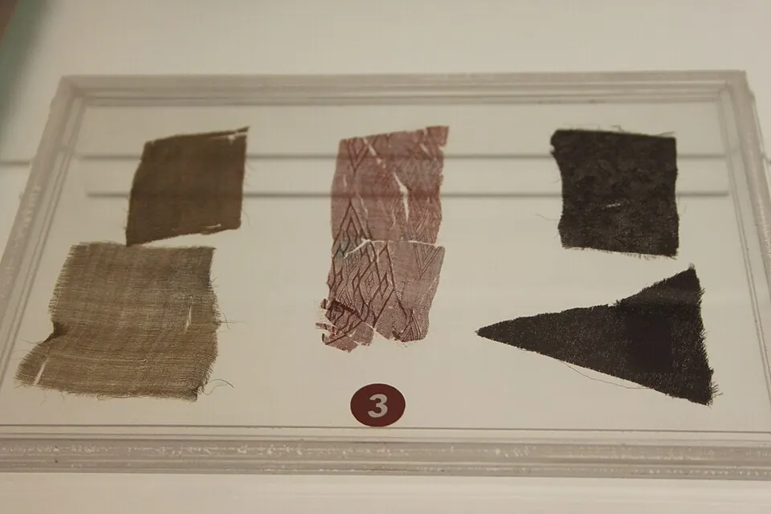
206 BC-220 AD
Han Dynasty
Contemporary with Rome. Silk Road established. Paper invented.
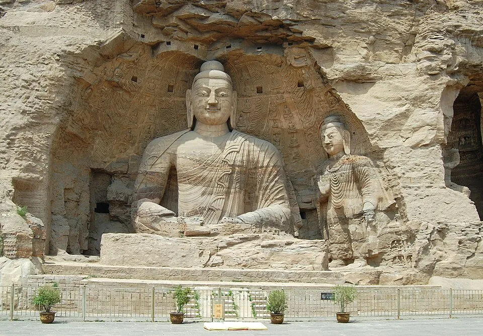
220-581
Six Dynasties
Fragmented period. Buddhism spread widely despite political chaos.
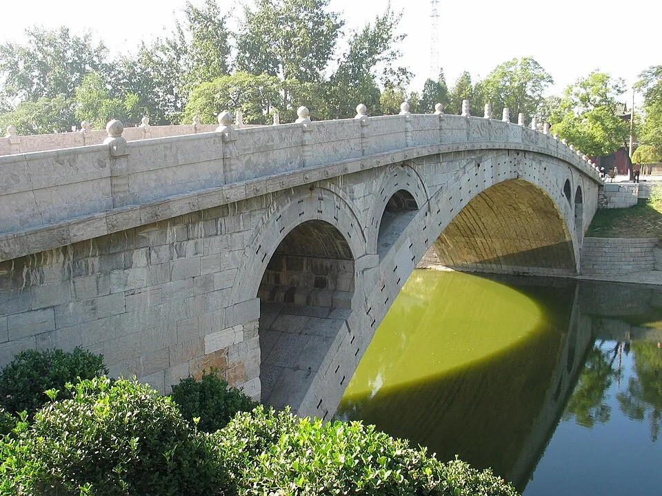
581-618
Sui Dynasty
Reunified China. Built the Grand Canal. Overthrown by Tang after 37 years.
Type the name of a Chinese historical site. We will tell you if it is an original structure, a later rebuild, an archaeological ruin, or a modern theme park.
Get Updates When We Add New Sites
Newsletter · 通讯订阅
We are continuously adding Chinese historical sites to our database. No spam. No ads. Just new verifications and route updates.
No spam. Unsubscribe anytime.
Common Questions · 常见问题
FAQ
What is the main difference between Tang and Song dynasties?
Tang (618-907) was a cosmopolitan military empire based in Chang'an. Song (960-1279) was an inward-looking commercial society based in Kaifeng then Hangzhou. Tang conquered; Song traded. Tang was bigger; Song was more innovative (paper money, gunpowder, compass, movable type).
How many Tang dynasty wooden buildings still exist?
Only 4 Tang wooden buildings survive in China: Nanchan Temple (782), Foguang East Hall (857), Tiantai Hermitage, and Guangrenwang Temple (831). All in Shanxi province.
Why are there so few Tang buildings left?
Timber burns. The An Lushan Rebellion (755-763), Huang Chao Rebellion (874-884), Buddhist persecution of 845, and repeated dynastic wars destroyed most Tang structures.
Is Tang Paradise in Xi an original?
No. Built after 2000. It is a theme park. For real Tang Xi an sites: Big Wild Goose Pagoda (Ming rebuild on Tang foundation) and the Shaanxi History Museum.
Where can I see the best Tang architecture?
In China: Foguang Temple and Nanchan Temple (both in Shanxi). Foguang East Hall is the largest Tang wooden structure still standing.
Is Qingming Riverside Garden worth visiting?
Only with family. It is a 1998 theme park with zero historical fabric. For real Song structures: Baoguo Temple (1013, Ningbo) or Iron Pagoda (1049, Kaifeng).
How long should I plan for a Tang-Song trip?
Minimum 2 weeks for both trails. 8-10 days for Tang alone. 10-14 days for Song alone.
Are sites accessible without Chinese language skills?
Mixed. Xi an and Hangzhou have good infrastructure. Shanxi mountain temples (Foguang, Nanchan) have almost no English signage and limited transit. Hire a guide or join a specialized tour.
What is the oldest wooden building in China?
Nanchan Temple in Shanxi, dated 782 (Tang Dynasty). It survived the great Buddhist persecution of 845 because it was too remote and insignificant to target.
Can I visit Foguang Temple without a guide?
Yes, but it is difficult. The temple is 4 hours from Taiyuan on mountain roads. No public transit. You need a private driver (~600-800 CNY/day from Taiyuan). Combine with Nanchan Temple in one day. No English signage.
What should I know about visiting Mogao Caves?
Book Standard Visit (8 caves, 238 CNY) 2-3 weeks ahead via WeChat mini-program. Strictly timed tours. No photos inside. Best months: April-May and September-October.
Are there any Tang dynasty artifacts still in Xi'an?
Very few in situ. Shaanxi History Museum has the best Tang collection. Daming Palace has foundations only. Big Wild Goose Pagoda is a Ming rebuild. For original Tang, go to Shanxi or Dunhuang.
Is the Forbidden City from the Tang or Song dynasty?
Neither. Built 1406-1420 during Ming Dynasty. Tang used Daming Palace in Xi'an. Song never used Beijing as capital.